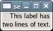

Sets the alignment of the lines in the text of the label relative to each other. Gtk::JUSTIFY_LEFT is the default value when the widget is first created.
If you instead want to set the alignment of the label as a whole, use set_alignment() instead. It has no effect on labels containing only a single line.
Example 84. Setting the Justification Mode of a GtkLabel
<?php
// Create a window to hold the label.
$window = new GtkWindow();
// Set up the window to close cleanly.
$window->connect_simple('destroy', array('Gtk', 'main_quit'));
// Create a label with two lines of text.
$label = new GtkLabel("This label has\ntwo lines of text.");
// Set the justification for the label.
$label->set_justify(Gtk::JUSTIFY_RIGHT);
// Add the label to the window.
$window->add($label);
// Show the window and start the main loop.
$window->show_all();
Gtk::main();
?> |

See also: get_justify()